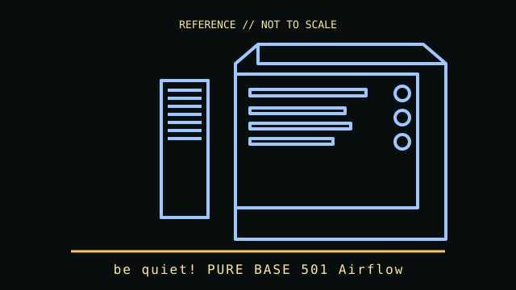

[ TOWER AND LEGACY DESKTOP CASES // IDENTIFIED ENCLOSURE ]
be quiet! PURE BASE 501 Airflow
2024 ATX mid-tower. A model-specific enclosure record with physical fit limits, revision notes and manufacturer references.

IDENTIFICATION: Confirm the chassis label, model suffix, revision and regional bundle. Manufacturer maximum clearances are conditional on fan, radiator, drive-cage and cable configurations; allow room for connectors and service access.
Recorded specifications
| Cataloged model | be quiet! PURE BASE 501 Airflow |
|---|---|
| Era / class | 2024 ATX mid-tower |
| Dimensions and component limits | ATX, microATX and Mini-ITX motherboards; up to 368 mm GPU length and 178 mm CPU-cooler height. Supports a front radiator up to 360 mm and a top radiator up to 240 mm. Airflow edition includes two 140 mm Pure Wings 3 PWM fans in the listed black configuration. |
| Revision / variant identification | The 501 series has different front-panel editions; identify “Airflow” explicitly and distinguish standard vs windowed variants. |
Compatibility and fit notes
This is the airflow-front PURE BASE 501, not the solid-front quiet version. Radiator, fan and graphics-card dimensions interact; check clearance with the installed front stack. Windowed/white versions may have different product IDs and panel accessories.
- Measure the exact GPU, CPU cooler, PSU, radiator and fan stack; nominal maximums may not be simultaneously usable.
- Check motherboard standoff locations, front-panel connectors, PSU cable routing, drive cages and expansion-slot alignment before assembly.
- Consult the applicable manual for screw locations, removable brackets, included hardware and fan/ARGB pinouts; do not force panels or boards into place.
Model-specific notes
The 501 series has different front-panel editions; identify “Airflow” explicitly and distinguish standard vs windowed variants.
Sources & further reading
- be quiet! — PURE BASE 501 Airflow BlackManufacturer specifications and downloads for airflow black model.
- be quiet! — PURE BASE 501 Airflow Black WindowManufacturer listing for the windowed variant; use the correct part number for panel details.
Specifications describe the identified model family; validate the exact part number, revision and regional package against the manufacturer's manual before purchase or installation.